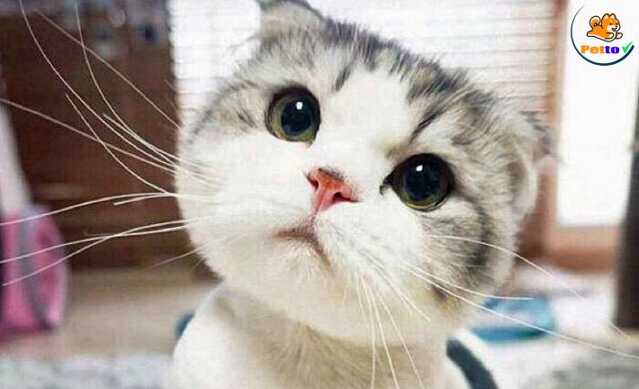

Chú mèo làm 'mẫu' quảng cáo xe hơi
TRUNG QUỐC-Làm mẫu chuyên nghiệp, mỗi lần xuất hiện, Maomao mang về cho chủ nhân từ 5.000 - 10.000 tệ (khoảng 18-36 triệu đồng).
Maomao hai tuổi, là một chú mèo Anh lùn, màu bạc, có đôi mắt to tròn. Anh Zheng, chủ nhân của Maomao cho biết, chú mèo vốn rất sợ người nên anh tìm cách rèn cho nó dạn dĩ hơn. Một lần, người chủ làm việc trong ngành công nghiệp ôtô đưa con mèo đến một triển lãm.
Anh đặt con thú cưng vào một chiếc ôtô để thử thách lòng dũng cảm của nó. Không ngờ, sự xuất hiện của chú mèo lập tức thu hút đám đông. Họ thi nhau chụp ảnh và chia sẻ lên mạng xã hội.
Sau đó, các thương hiệu ôtô gọi điện cho Zheng mời Maomao làm mẫu cho họ. Đây là khởi đầu giúp chú mèo bước chân vào nghề người mẫu.
Maomao hội tụ đủ tố chất của một "nàng mẫu" chuyên nghiệp: mặt phụng phịu. thái độ hờ hững và trang phục dễ thương. Thay vì choáng ngợp hay chạy trốn vì bị đám đông vây quanh như hồi bé, Maomao rất dạn dĩ và điềm tĩnh.
Bây giờ, nó đã trở thành một cái tên quen thuộc tại các triển lãm ôtô và thường xuất hiện vài lần mỗi tháng.
Zheng cho hay, đa phần số tiền kiếm sau các buổi làm mẫu sẽ mua thức ăn đắt tiền, quần áo, phụ kiện cho Maomao - như một ngôi sao.
Các gia đình 'vung tiền' mua chó sau đại dịch
SINGAPORE-Nhịp sống bị đảo lộn vì Covid-19, nhiều người dân "quốc đảo sư tử" tìm đến những chú chó cưng để giải tỏa và đẩy giá chó lên cao.
Tháng trước, Isabel Joy Kua 20 tuổi, sinh viên Đại học Công nghệ Nanyang, mua một con chó với giá 8.900 SGD (hơn 154 triệu đồng). Con chó giống Bichon Frise ba tháng tuổi được chủ nhân đặt tên là Sunny. Kua cho biết cô muốn nuôi chó từ hồi tiểu học nhưng đến nay mới thuyết phục được bố mẹ chi tiền. "Chúng tôi dùng tiền tiết kiệm đi du lịch để mua Sunny", nữ sinh viên tiết lộ.

Kua không phải người duy nhất ở Singapore sẵn sàng bỏ hàng nghìn SGD để mua cún cưng. Maxime, một người đàn ông ngoài 30 tuổi, cũng tiết lộ đã mua một con chó Poodle vào tháng 6/2020. Đến tháng 11, anh đón thêm một con chó giống Pomsky (lai giữa giống Pomeranian và Husky) về nhà. Tổng số tiền Maxime bỏ ra cho hai thú cưng là hơn 10.000 SGD.

Tại Singapore, chó cảnh được nhân giống trong nước hoặc nhập từ Ireland, Trung Quốc, Australia. So với năm 2020, giá chó cảnh hiện nay đắt đã gấp nhiều lần. Khảo sát tại năm cửa hàng chó cảnh của tờ The Straits Times cho thấy giá chó Golden Retriever có thể lên gần 13.000 SGD một con, trong khi hồi tháng 1/2020 là 5.000 SGD. Chó poodle cũng từ 4.000 lên gần 12.000 SGD.
Các cửa hàng đều nhận định giá chó sẽ còn tiếp tục leo cao.
Nhờ hủy bỏ các chuyến du lịch và thường xuyên ở nhà, người Singapore đủ tài chính cũng như thời gian để mua thú cưng bất chấp giá cả đắt đỏ. Nhu cầu nuôi chó của họ tăng vọt kể từ khi lệnh phong tỏa hết hiệu lực hồi tháng 6/2020, đến nay chưa có dấu hiệu dừng lại.
Maxime cho biết ngày 19 và 20/6, các cửa hàng thú nuôi bắt đầu hoạt động trở lại và lập tức kín hết lịch tới xem chó. Kua thì tiết lộ: "Nhiều cửa hàng chào mời tôi mua chó từ trước khi tôi tiếp xúc với nó. Điều này thật vô lý nhưng họ nói rằng nếu đợi đến hôm sau, con chó nhiều khả năng đã được người khác mua".
Khác với Kua và Maxime, Joanna Cheng-Ajlani nhận nuôi Polo, một con chó Singapore 9 tuổi từ trạm cứu hộ. "Thành thật mà nói, nếu công việc của vợ chồng tôi không thay đổi, chúng tôi sẽ không nghĩ đến chuyện nuôi thú cưng", Cheng-Ajlani bày tỏ. Chi phí nhận nuôi mỗi con chó dao động từ 250 đến 530 SGD, tùy từng trạm.
Christine Bernadette, điều phối viên gây quỹ nhóm bảo vệ động vật Causes for Animals nhận định người dân không hề sai khi mua chó cảnh nhưng cần chọn lựa những đơn vị nhân giống "có đạo đức".
"Nhiều khách hàng không biết điều kiện sống của bố mẹ con chó họ mua. Chúng thường bị nhốt và giữ sống chỉ để nhân giống", Bernadette nói. "Cộng đồng cần được giáo dục nhiều hơn về sự tàn ác của các xưởng nhân giống chó".
Con chó bỗng dưng thành triệu phú
MỸ-Lulu, con chó 8 tuổi giống Border Collie (một loại chó chăn gia súc) trở nên nổi tiếng sau khi được thừa kế hàng triệu USD của người chủ vừa qua đời.
"Năm triệu USD sẽ được chuyển vào một quỹ ủy thác sau khi tôi qua đời để chăm sóc cho Lulu", di chúc của Bill Dorris, chủ Lulu, viết. Không vợ con, Bill Dorris sống ở Nashville, Tennessee với cún cưng. Cuối năm 2020, ông qua đời ở tuổi 84.

Theo ý nguyện của Dorris, Lulu sẽ được chuyển cho nhân viên ông là Martha Burton 88 tuổi chăm sóc. Trước đây, mỗi lần đi công tác, Dorris đều nhờ Burton tới trông nom Lulu.
"Ông ấy thực sự rất yêu chó", Burton nói về mối quan hệ giữa chủ cũ và Lulu.
Ngoài năm triệu USD được chuyển vào quỹ ủy thác, tài sản của Dorris còn bao gồm nhiều bất động sản. Burton thừa nhận chưa biết sẽ chi hàng triệu USD cho một con chó như thế nào, song bà "vẫn sẽ thử".
Đây không phải lần đầu tiên thú cưng ở Mỹ thừa kế tài sản kếch xù từ chủ nhân. Năm 2015, một phụ nữ ở Queens để lại cho con chó giống Malta khối tài sản trị giá một triệu USD bao gồm trang sức, quỹ ủy thác và nhà nghỉ dưỡng.
- 12/04/2021
- 5G có thể khẳng định vị trí chính thống trong năm 2021?
- 13/04/2021
- Gần 10.000 CMND, CCCD người Việt bị rao bán trên mạng: Bộ Công an lên tiếng
- 14/04/2021
- Thử nghiệm ứng dụng tuyển dụng, tìm việc trực tuyến Tuổi Trẻ Tìm Việc - ttJOBS
- 12/04/2021
- Thu nhập cao chưa chắc trở thành người giàu có, bạn phải làm được điều này thì mới duy trì sự giàu có đến hết đời
- 13/04/2021
- Quy luật của người nghèo: Người càng nghèo càng thích làm 3 loại nghề và họ sẽ chỉ càng nghèo hơn, đọc mà thấm thía từng câu từng chữ
- 14/04/2021
- Hành động 'có tâm' của bác bảo vệ: Gấp gọn gàng hàng trăm áo mưa phơi trên xe cho khô ráo
- 12/04/2021
- Hình ảnh những em nhỏ trong khu cách ly ở Bắc Giang: Trời nóng nực vẫn mặc bộ đồ bảo hộ rộng thùng thình, ánh mắt ngơ ngác nhìn mà thương
- 13/04/2021
- Đứa trẻ trèo lên ô tô nghịch khiến xe trôi ra đường, bố lao tới cứu nguy: Phản ứng tiếp theo của ông ta gây bức xúc
- 14/04/2021
- Clip: Nam thanh niên leo lên tầng thượng khách sạn giữa trung tâm Hà Nội rồi bất ngờ nhảy xuống đất
- 12/04/2021
- Chê bài mới của Jack không hay, cựu thí sinh 'King Of Rap' bị FC Đom Đóm ném đá tơi tả, thi nhau vote 1 sao
- 13/04/2021
- Bị nhận xét ca khúc mới khó nghe, Jack có động thái phản hồi "ngang ngược" ngay giữa đêm
- 14/04/2021
- Chính thức: Jack là thành viên cuối cùng của Running man Vietnam mùa 2
- 12/04/2021
- Rốt cục Garen hay Darius là kẻ mạnh hơn trong Tốc Chiến?
- 13/04/2021
- Game thủ Liên Quân tranh cãi, cho rằng có sự lươn lẹo về "hàng tặng không bán" nhưng bắt nạp tiền mới có?
- 13/04/2021
- Gấu, ADC và ProE nói gì sau khi Team Flash ẵm trọn 4 giải thưởng cá nhân tại ĐTDV mùa Xuân 2021?
- 12/04/2021
- Nhạc chill giúp tâm trạng được thư giãn
- 13/04/2021
- Nhạc EDM sẽ mang lại cho bạn 1 ngày tràn đầy năng lượng
- 14/04/2021
- Nhạc Hoa ngữ với những bản Hit, top bảng xếp hạng ^^!
- 12/04/2021
- Tối 3/4 thêm 6 ca mắc mới COVID-19
- 13/04/2021
- Vì sao virus SARS- CoV-2 biến chủng Ấn Độ nguy hiểm? Chuyên gia chỉ ra 2 lý do
- 14/04/2021
- 2 kiểu chế biến thịt lợn siêu nguy hiểm mà nhiều gia đình đang mắc phải, khiến thịt biến chất và dễ gây ung thư
- 12/04/2021
- Bài giảm mỡ bụng trong 7 ngày hiệu quả, an toàn
- 13/04/2021
- Thực đơn giảm 7 kg trong 7 ngày
- 14/04/2021
- Bác sĩ hướng dẫn 4 cách làm sạch tận cùng lỗ chân lông trong mùa hè dễ bí da, lên mụn ẩn
- 12/04/2021
- Vẻ điển trai của diễn viên 1m88 Thuận Nguyễn
- 13/04/2021
- Giày thể thao của Kanye West được bán với giá 43 tỷ
- 14/04/2021
- Trấn Thành và Tuấn Trần tung ảnh đẹp nhân 'Bố già' xuất ngoại
- 12/04/2021
- Chú mèo làm 'mẫu' quảng cáo xe hơi
- 13/04/2021
- Các gia đình 'vung tiền' mua chó sau đại dịch
- 14/04/2021
- Con chó bỗng dưng thành triệu phú